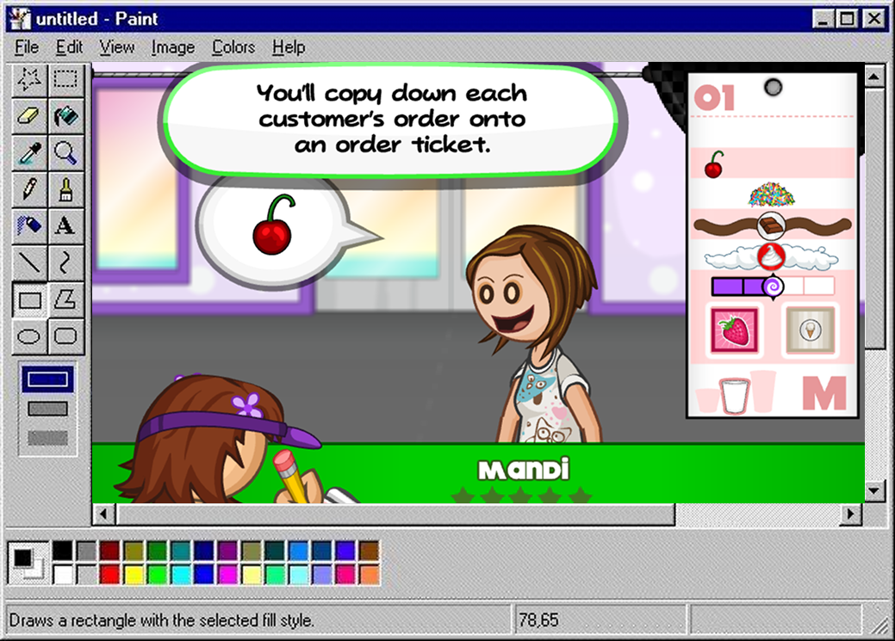
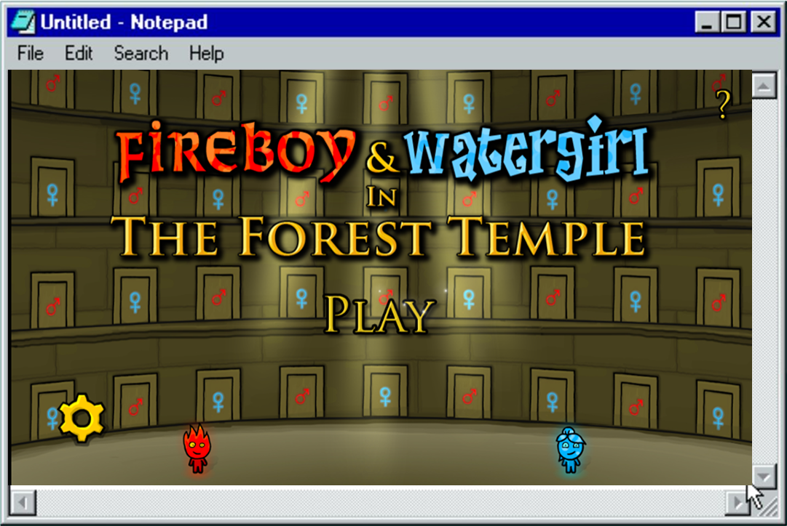

Предлагаю поностальгировать вместе со мной,
ведь старость — не радость, памяти мало, что-то забывается. А я напомню ↓
Вы словите флешбэки
Посмеетесь с мемчиков
Посмотрите мое детское видео в конце
//////////////////////////////////////////
Лот номер 1
Игра «Папа Луи: Приготовление коктейлей» — симулятор бармена,
где ты учишься готовить разные коктейли, следить за заказами
и обслуживать клиентов. Благодаря ей я романтизировала весь общепит и почти устроилась бариста. Тыкни
тут, чтоб поиграть.

Скриншот из игры "Папа Луи"
//////////////////////////////////////////
Лот номер 2
Огонь и вода — игра, которая поссорит даже самых близких друзей. Обсуждение стратегии игры происходит на повышенных тонах ПОЧТИ СРАЗУ.
Однако, если ты решил поиграть один, смоожешь стать амбидекстром:D. Хочешь рискнуть? Тыкни
тут.

Скриншот из игры "Огонь и вода"
//////////////////////////////////////////
Лот номер 3
Аватария Игра, которая научила меня мату,
как обманывать людей на подарки, дружить ради выгоды.
Опираясь на статистику, я собрала фразы, которые чаще всего услышишь в этой игре:
Ищу мужа жми 1 2 3
Подарю вип за 3 подарка
Магазин ко мне честно без обмана
Тут ссылочку не буду вставлять, сами знаете, где искать ;D